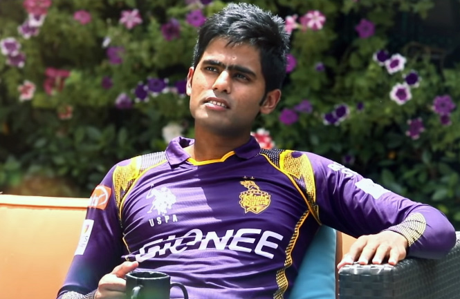

राइजिंग स्टार्स एशिया कप: पाकिस्तान ए के खिलाफ हार के बाद आलोचनाओं से घिरे तिलक वर्मा
राइजिंग स्टार्स एशिया कप में पाकिस्तान ए के खिलाफ हार के बाद भारत ए के कप्तान तिलक वर्मा की मैच के बाद की टिप्पणियों पर सोशल मीडिया पर तीखी प्रतिक्रिया देखने को मिली है।

राइजिंग स्टार्स एशिया कप 2026 में भारत ए को पाकिस्तान ए के खिलाफ 48 रन से हार का सामना करना पड़ा। इस मुकाबले में कप्तान तिलक वर्मा ने संघर्षपूर्ण शतक लगाया, लेकिन वह टीम को जीत नहीं दिला सके। मैच के बाद अपने बयान में तिलक ने बल्लेबाजी में साथ न मिलने पर निराशा जताई थी, जिसके बाद उन्हें ऑनलाइन आलोचनाओं का सामना करना पड़ रहा है।
314 रन के लक्ष्य का पीछा करने उतरी भारत ए की टीम 49.1 ओवर में 265 रन पर सिमट गई। पाकिस्तान ए की ओर से हसन नवाज और अली रज़ा ने तीन-तीन विकेट झटके, जबकि मोहम्मद इमरान रंधावा को दो सफलता मिली। इस जीत के साथ पाकिस्तान ए ने टूर्नामेंट के सेमीफाइनल में अपनी जगह पक्की कर ली है, और शानदार प्रदर्शन के लिए हसन नवाज को 'प्लेयर ऑफ द मैच' चुना गया।
और पढ़ें
केन विलियमसन बने डरबन सुपर जायंट्स के नए हेड कोच
न्यूजीलैंड के पूर्व कप्तान केन विलियमसन को 2027 SA20 लीग के लिए डरबन सुपर जायंट्स का हेड कोच नियुक्त किया गया है।
 खेल
खेलदक्षिण अफ्रीका के वियान मुल्डर ने टेस्ट मैच में शतक और 5 विकेट लेकर रचा इतिहास
दक्षिण अफ्रीका के ऑलराउंडर वियान मुल्डर ने बांग्लादेश के खिलाफ टेस्ट मैच में शतक जड़ने के साथ गेंदबाजी में 5 विकेट लेकर एक खास उपलब्धि हासिल की है।

खेलवैभव सूर्यवंशी के दोहरे शतक पर सूर्यकुमार यादव ने की तारीफ, बताया अपनी प्रेरणा
राइजिंग स्टार्स एशिया कप में वैभव सूर्यवंशी ने यूएई के खिलाफ 53 गेंदों में 204 रनों की शानदार पारी खेली। उनकी इस उपलब्धि पर भारतीय खिलाड़ी सूर्यकुमार यादव ने उन्हें अपनी प्रेरणा बताया है।
 खेल
खेलदक्षिण अफ्रीका ने बांग्लादेश को दूसरे टेस्ट में पारी और 219 रन से हराया
दक्षिण अफ्रीका ने सेंचूरियन टेस्ट में बांग्लादेश को एक पारी और 219 रन से हराकर दो मैचों की सीरीज 2-0 से अपने नाम कर ली। मैच महज तीन दिन में समाप्त हो गया।